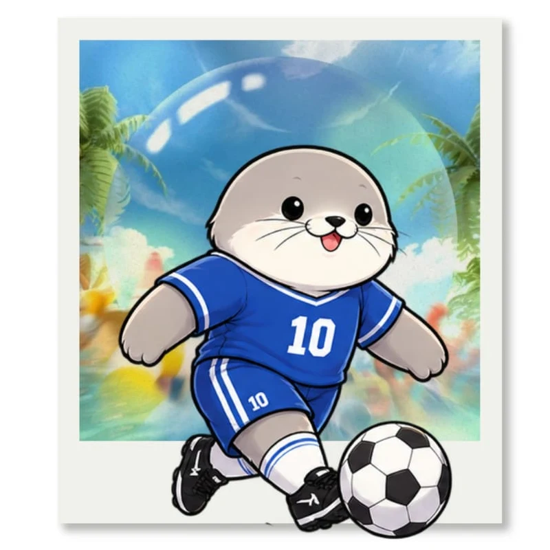
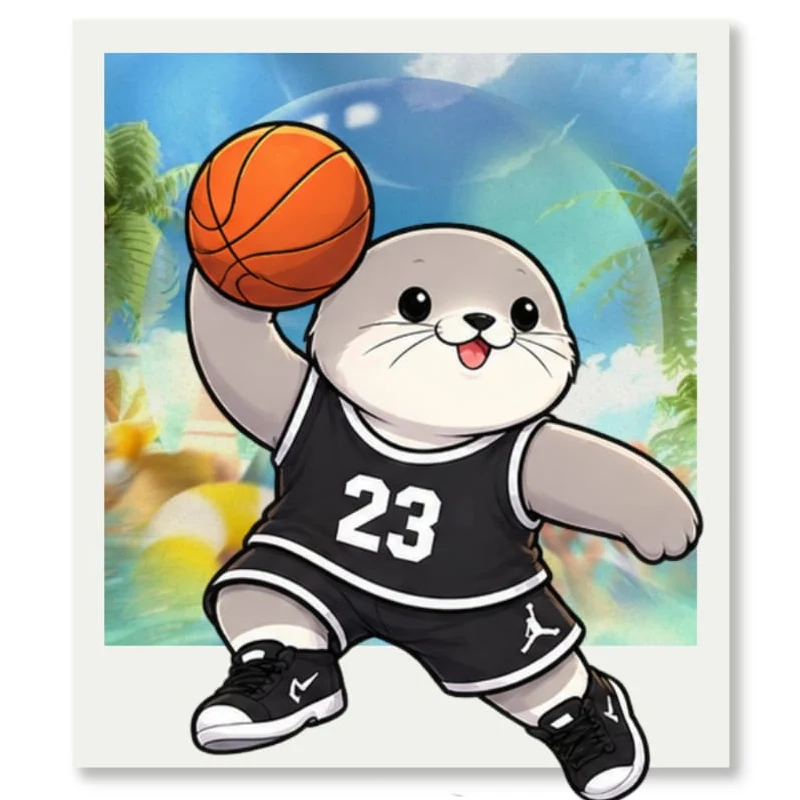
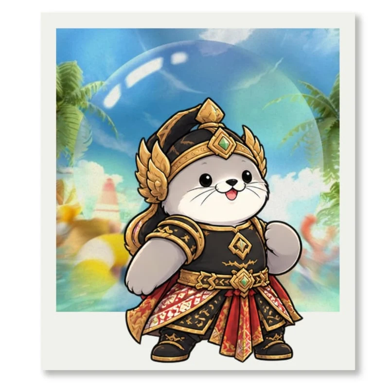

Explosion of Generation
EXPONER Guidebook • 2026
Rangkuman aturan, persyaratan, dan dokumen teknis EXPONER CUP 2026. Pilih cabang lomba untuk membuka bagian yang kamu perlukan.
Pendahuluan
Pada akhir tahun 2026, kami sebagian OSIS/MPK dan pihak Sekolah Prestasi Prima akan mengadakan kegiatan EXPONER yang bertema SUMMER.
EXPONER merupakan acara yang dirancang oleh pihak OSIS/MPK. Acara ini bertujuan agar para siswa dan siswi Sekolah Prestasi Prima dapat mengembangkan kreativitas mereka di bidang non-akademik. Selain itu, acara ini dibuat agar para siswa dan siswi bisa saling bersosialisasi dan membentuk solidaritas yang kuat antar sesama murid di lingkungan Sekolah Prestasi Prima.
Daftar Lomba

02🏀 BasketJadwal main, ketentuan pemain, dan teknis
03🎨 Digital PosterAturan pengiriman serta orisinalitas karya 04🩺 PMRKetentuan peserta dan tiga mata lomba 05🎮 Mobile LegendsRegistrasi, komposisi pemain, dan larangan
06🎬 Video CompetitionPengumpulan video dan penggunaan materi 07🔥 Free FireJuknis pertandingan tersedia dalam PDF 08🎥 Short MoviePanduan teknis produksi film pendekFutsal
Ketentuan Teknis dan Pertandingan
- Biaya pendaftaran perlombaan futsal sebesar Rp275.000,00 ditambah Rp50.000,00 (Walk Out).
- Pemain wajib menggunakan deker. Pemain yang tidak menggunakannya akan dikenakan pelanggaran berupa kartu kuning.
- Waktu setiap bagan 25 menit. Pertandingan berlangsung selama 2 × 10 menit, jeda pergantian gawang 1 menit, serta 4 menit waktu simpanan. Jika tim seri, waktu simpanan dipakai untuk adu penalti.
- Pemain yang terkena kartu merah tidak diperbolehkan mengikuti pertandingan selama 2 menit. Setelah itu pemain pengganti dapat masuk. Pemain yang terkena kartu merah tidak diperbolehkan mengikuti satu pertandingan selanjutnya.
- Pemain yang terkena dua kartu kuning (kartu merah tidak langsung) tidak diperbolehkan mengikuti pertandingan selama 2 menit. Jika sebelum 2 menit timnya kebobolan, pemain pengganti boleh langsung masuk. Pemain yang terkena dua kartu kuning tidak boleh bermain pada pertandingan tersebut, tetapi boleh bermain di pertandingan selanjutnya.
- Jumlah minimal pemain saat kick-off adalah 3 orang. Jika kurang dari itu, pertandingan tetap dilanjutkan dengan pemain yang tersedia dan salah satu pemain menjadi kiper.
- Seluruh pemain wajib standby 20 menit sebelum waktu pertandingan.
- Saat line-up, setiap tim wajib menyerahkan uang pelanggaran sebesar Rp50.000.
- Kapten tim harus mengisi daftar hadir sebelum pertandingan dimulai di meja penanggung jawab futsal.
- Sistem pertandingan menggunakan sistem knockout.
- Kick-off boleh dilakukan satu kali sentuhan langsung ke arah gol.
- Tendangan ke dalam setelah bola keluar dilakukan saat bola diam, dalam waktu 4 detik. Posisi kaki penendang boleh di luar atau di dalam lapangan dan bola harus berada di atas garis samping.
- Kartu kuning dikenakan denda Rp20.000.
- Kartu merah dikenakan denda Rp25.000.
- Jika hasil pertandingan seri/draw, langsung dilakukan adu penalti.
- Penjaga gawang tidak boleh memegang bola lebih dari 4 detik. Pelanggaran dikenai tendangan bebas tidak langsung untuk lawan dari luar kotak penalti.
- Penjaga gawang tidak boleh memegang bola yang diumpan dari kaki teman satu tim. Pelanggaran dikenai tendangan bebas tidak langsung untuk lawan.
- Jika terjadi pelanggaran keenam dan seterusnya, dilakukan second penalty. Jumlah pelanggaran dihapus pada babak selanjutnya.
- Pemain yang bermain kasar dan berbahaya akan mendapat peringatan serius dari wasit berupa kartu kuning atau kartu merah.
- Pemain tidak boleh terlambat masuk ke lapangan. Panitia tidak menerima alasan keterlambatan.
- Panitia berhak mengubah dan merevisi peraturan sewaktu-waktu jika terjadi hal yang tidak terduga.
- Jika peserta mengalami cedera parah, hal tersebut di luar tanggung jawab penyelenggara.
- Setiap keputusan wasit bersifat final dan tidak dapat diganggu gugat.
- Keputusan panitia dapat berubah sewaktu-waktu jika dianggap perlu sesuai situasi dan kondisi.
- Tidak ada refund apabila tim yang terdaftar tidak hadir atau didiskualifikasi.
- Peserta paling lambat melakukan pembayaran H-3 sebelum Technical Meeting.
- Peserta diwajibkan membawa ID card/kartu pelajar sekolah.
- Jika pembayaran menggunakan GoPay, sertakan screenshot bukti pembayaran dengan keterangan “Uang Pendaftaran Futsal Exponer Cup 2026 (ditambah nama asal sekolah)”.
- Pembayaran dilakukan melalui Google Form pendaftaran.
- Setiap tim wajib membawa supporter minimal 10 orang. Jika tidak memenuhi jumlah minimal, dikenakan denda Rp10.000 per orang.
- Peserta boleh membawa banner yang tidak membahayakan untuk mendukung sekolah asal.
- Supporter terbaik akan mendapat penghargaan “Best Supporter”.
- Informasi lebih lanjut akan diberitahukan saat Technical Meeting.
Persyaratan dan Ketentuan Peserta
- Peserta wajib mengikuti akun Instagram: @OSIS_SMKPP, @OSIS_SMAPP, @PPEXPONER, @SMKPRESTASIPRIMA, dan @SMA_PRESTASIPRIMA.
- Peserta merupakan siswa SMP/MTs/sederajat di wilayah Jabodetabek.
- Peserta dalam satu tim berasal dari sekolah yang sama.
- Hanya pemain yang terdaftar di formulir yang dapat mengikuti pertandingan.
- Setiap tim wajib mengirim 10 pemain dan 2 official.
- Pemain wajib menggunakan sepatu futsal dan deker atau alat keselamatan pemain lainnya. Pelanggaran dikenakan denda.
- Peserta maupun supporter dilarang berkata kotor, rasis, dan mengandung SARA.
- Supporter boleh membawa alat pendukung seperti banner sesuai peraturan. Bom asap, kayu untuk bendera, bambu, dan barang berbahaya lainnya dilarang.
- Peserta wajib mengisi formulir yang disediakan panitia.
- Peserta dilarang memakai perhiasan seperti gelang, kalung, cincin, dan sebagainya.
- Setiap tim wajib memakai jersey/baju futsal yang serasi. Jika belum memiliki jersey, tim dapat menggunakan jersey futsal dengan warna yang sama.
- Setiap tim wajib menyerahkan uang jaminan pelanggaran sebesar Rp50.000.
- Tidak ada refund apabila tim yang terdaftar tidak hadir atau didiskualifikasi.
- Pembayaran paling lambat H-2 penutupan pendaftaran.
- Perwakilan anggota tim wajib menyerahkan fotokopi ID card/kartu pelajar dan surat keterangan dari sekolah asal seluruh anggota. Berkas dikumpulkan bersama persyaratan pendaftaran saat registrasi.
- Jika pembayaran menggunakan GoPay, sertakan screenshot bukti pembayaran dengan keterangan “Uang Pendaftaran Futsal Exponer Cup 2026 (ditambah nama asal sekolah)”.
Basket
Peraturan Pertandingan
- Peserta adalah siswa/i aktif SMP/sederajat yang berdomisili di Jabodetabek.
- Peserta diharapkan memahami peraturan yang berlaku pada Exponer Cup.
- Peserta diharapkan menghubungi contact person yang tersedia terlebih dahulu untuk menanyakan ketersediaan slot.
- Tim harus datang 60 menit sebelum jadwal pertandingan dan registrasi kepada panitia dengan mengisi DSP (Daftar Susunan Pemain). Seluruh persyaratan asli berupa kartu identitas dikumpulkan untuk pengecekan ulang.
- Semua keputusan panitia tidak dapat diganggu gugat.
- Pemain yang terlambat masih boleh mengikuti pertandingan hingga berakhirnya kuarter pertama.
- Pelatih, ofisial, dan manajer yang terlambat masih boleh mendampingi tim hingga berakhirnya kuarter pertama.
- Jika pemain cedera, panitia hanya memberikan pertolongan pertama. Penanganan selanjutnya menjadi tanggungan tim masing-masing.
Peraturan Tambahan
- Waktu pertandingan menggunakan waktu kotor.
- Dilarang menggunakan cincin, kalung, gelang, dan perhiasan lainnya.
- Aksesori tidak harus seragam, tetapi harus satu warna (kaus kaki, leg sleeve, dan lain-lain).
- Peserta tidak diperbolehkan memiliki nomor punggung yang sama dalam satu tim.
- Setiap tim mendapat 2 kali time-out dalam satu pertandingan. Time-out berdurasi 1 menit.
Aturan jika Terjadi Hujan
Jika hujan terjadi pada kuarter 1–3, pertandingan ditunggu. Jika hujan terjadi pada kuarter 4, panitia menunggu 45 menit. Jika hujan masih berlanjut, pemenang ditentukan berdasarkan skor terakhir.
Aturan Walk Out
Pemain diharapkan datang 30 menit sebelum pertandingan. Dua puluh menit sebelum game, pemain harus sudah siap. Lima belas menit sebelum game, pemain akan dipanggil untuk pemanasan. Panggilan dilakukan 3 kali. Jika setelah 3 panggilan pemain tidak datang ke lapangan, tim dinyatakan walk out (gugur).
Ketentuan Peserta — Pemain
- Fotokopi kartu tanda pelajar. Jika hilang, lampirkan surat keterangan dari sekolah.
- Foto berwarna ukuran 3×4 sebanyak 2 lembar.
- Surat keterangan sekolah yang menyatakan pemain benar-benar peserta didik aktif.
- Surat rekomendasi sekolah yang mengizinkan tim basket sekolah bertanding.
- Seluruh persyaratan pertandingan wajib dilampirkan bersama formulir saat registrasi dalam bentuk hard file, paling lambat saat Technical Meeting.
- Biaya pendaftaran Rp250.000,00 ditambah uang WO Rp50.000,00 (tunai/debit). Diperbolehkan DP 50%; wajib lunas H-Technical Meeting. Setiap tim minimal 8 dan maksimal 12 orang.
- Setiap tim wajib membawa minimal 10 supporter. Jika kurang, dikenakan denda Rp10.000 per orang.
- Jika pemain WO atau tidak hadir saat pertandingan, uang pendaftaran tidak dapat di-refund.
- Jika transfer melalui GoPay, sertakan screenshot dengan format “Uang Pendaftaran EXPONER CUP BASKET (asal sekolah)”.
- Boleh membawa properti seperti banner tanpa gagang/stik dan barang yang tidak membahayakan.
- Supporter terbaik mendapat penghargaan “Best Supporter”. Kriteria: jumlah minimal 10 orang, kreatif, memeriahkan acara dengan tertib, dan tidak ricuh.
- Keputusan juri tidak dapat diganggu gugat.
- Informasi lebih lanjut diberitahukan saat Technical Meeting.
- Perwakilan anggota tim wajib menyerahkan fotokopi ID card/kartu pelajar dan surat keterangan asal sekolah seluruh anggota saat registrasi.
Ketentuan Official
- Fotokopi KTP sebanyak 2 lembar.
- Foto berwarna ukuran 3×4 sebanyak 2 lembar (tiap tim).
Ketentuan Teknis
- Keputusan wasit mutlak dan tidak dapat diganggu gugat.
- Angka dari dalam garis 3 point bernilai 2 point; dari luar garis 3 point bernilai 3 point; free throw bernilai 1 point.
- Pertandingan putra dan putri dimainkan oleh 2 tim. Setiap tim terdiri dari 5 pemain inti, maksimal 7 pemain cadangan, dan maksimal 2 asisten pelatih.
- Tim yang tidak hadir atau tidak dapat menghadirkan 5 pemain siap bermain dalam 10 menit setelah jadwal dimulai dinyatakan WO.
- Pertandingan dimainkan selama 4 kuarter, masing-masing 7 menit.
- Tim yang terlibat keributan/perkelahian yang mengganggu pertandingan didiskualifikasi.
- Dilarang memakai aksesori yang dapat mencederai lawan, kecuali handband, headband, kacamata sport, atau benda pelindung lainnya.
- Pemain wajib menggunakan seragam/jersey yang disesuaikan dengan tim sekolah masing-masing.
- Warna kaus kaki harus selaras dengan jersey, misalnya jersey gelap dengan kaus kaki hitam atau jersey terang dengan kaus kaki putih.
Contact person: 088905862768 — Aafiyah
Digital Poster
Ketentuan Peserta dan Karya
- Peserta merupakan peserta didik SMP/SMA/SMK/sederajat.
- Peserta telah terdaftar sebagai peserta lomba.
- Pendaftaran per individu, tidak berkelompok.
- Setiap sekolah boleh mengirim lebih dari satu peserta.
- Peserta wajib menaati peraturan lomba poster.
- Lomba dilaksanakan secara daring/online.
- Poster wajib dikirim tepat waktu sesuai jadwal. Keterlambatan langsung didiskualifikasi.
- Peserta wajib mengikuti Technical Meeting. Ketidakhadiran mengurangi nilai akhir karya.
- Wajib mengikuti Instagram @ppexponer, @sma_prestasiprima, @smkprestasiprima, @osis_smapp, dan @osis_smkpp.
- Panitia tidak bertanggung jawab atas tuntutan hukum pihak lain terhadap karya yang dikirim.
- Panitia berhak mendiskualifikasi peserta yang melanggar peraturan.
- Keputusan juri tidak dapat diganggu gugat.
- Panitia berhak memposting peserta dan karyanya di media sosial untuk keperluan juara Exponer.
- Karya harus orisinal.
- Biaya pendaftaran Rp60.000,00.
PMR
Ketentuan Umum
- Peserta lomba merupakan anggota PMR aktif dari sekolah masing-masing.
- Peserta memakai Pakaian Dinas Harian (PDH), Pakaian Dinas Lapangan (PDL), atau seragam sekolah dan slayer.
- Peserta yang tidak mengikuti Technical Meeting dianggap menerima dan menyetujui seluruh peraturan hasil Technical Meeting.
- Setiap sekolah wajib mengikuti agenda pembukaan dan penutupan.
- Peserta melakukan daftar ulang pada hari perlombaan.
- Peserta wajib menjaga sopan santun, ketertiban, kebersihan, dan keamanan lingkungan lomba.
- Dilarang membawa senjata tajam, senjata api, rokok, minuman keras, dan barang berbahaya lainnya.
- Peserta, pelatih, atau official dilarang melewati batas wilayah perlombaan, ruang panitia dan juri, serta ruang rapat nilai. Jatah gratis supporter hanya untuk 2 official (pelatih dan pembina); supporter tambahan dikenai biaya masuk Rp10.000 per orang.
- Peserta wajib menggunakan name tag selama perlombaan.
- Peserta dilarang membawa makanan dan minuman dari luar, tetapi boleh membawa tumbler dan tempat makan sendiri.
Pertolongan Pertama
- Satu tim pertolongan pertama terdiri dari 4 orang.
- Peserta berkumpul di ruang isolasi.
- Batas waktu mata lomba pertolongan pertama 10 menit. Panduan menggunakan buku pedoman pertolongan pertama PMR dengan 6 langkah penilaian (sistem grade terbuka).
- Penjurian bersifat aktif.
- Keputusan juri mutlak dan tidak dapat diganggu gugat.
- Kartu luka diberikan panitia saat di ruang isolasi.
- Peserta diharapkan membawa peralatan pertolongan pertama sesuai ketentuan.
- Kelengkapan peralatan pertolongan pertama dinilai.
- Korban dipilih oleh juri.
Tandu Darurat
- Peserta tandu campuran masuk kategori tandu putra.
- Wajib memakai PDL dan slayer sesuai tingkatan.
Ketentuan umum
- Bambu disediakan panitia.
- Kegiatan dimulai pukul 08.00 dan peserta tampil serentak.
- Batas waktu pembuatan tandu: Tandu Madya Putra 5 menit; Tandu Madya Putri 6 menit.
Peralatan yang dibawa
- Mitela: 5 buah.
- Selimut: 1 buah.
- Tali tandu: 1 set.
Kepalangmerahan
- Setiap tim terdiri dari 2 peserta.
- Peserta wajib mengenakan PDH/seragam sekolah serta slayer sesuai tingkatan PMR masing-masing.
- Peserta wajib menggunakan name tag selama perlombaan.
Babak pertama — Tes tertulis
- Seluruh peserta mengerjakan 100 soal tertulis secara serentak.
- Waktu pengerjaan 90 menit.
- Waktu dimulai setelah panitia memberi aba-aba “Mulai”.
Babak kedua — Kahoot
- 10 tim dengan nilai tertinggi pada babak pertama berhak melanjutkan.
- Peserta menjawab pertanyaan melalui aplikasi/platform Kahoot.
- Peserta yang lolos wajib menggunakan 1 gadget/alat komunikasi pribadi.
- Peserta wajib memastikan gadget siap digunakan dan menyediakan paket data/internet pribadi.
Mobile Legends
Pendaftaran
- Pendaftaran dibuka untuk SMP/SMA/SMK sederajat.
- HTM Rp150.000. Pendaftaran dilakukan secara offline/online melalui link pendaftaran.
- Batas waktu pendaftaran: 19 September–14 Oktober.
- Pembayaran paling lambat H-3 sebelum Technical Meeting.
- Jika transfer lewat GoPay, kirim screenshot bukti dengan keterangan “Uang Pendaftaran Exponer Cup Mobile Legend (asal sekolah/nama tim)”.
- Biaya pendaftaran dapat ditransfer ke rekening BRI 150601251155566 atas nama Yayasan Wahana Prestasi Prima.
- Perwakilan tim dapat registrasi offline di Sekolah Prestasi Prima atau online melalui website yang disediakan.
- Perwakilan anggota tim wajib menyerahkan fotokopi ID card/kartu pelajar seluruh anggota bersama berkas pendaftaran saat registrasi.
- Informasi lebih lanjut diberitahukan saat Technical Meeting.
- Pelunasan wajib dibayarkan H-3 Technical Meeting.
Peraturan Peserta
- Peserta wajib mengikuti akun Instagram @OSIS_SMKPP, @OSIS_SMAPP, dan @PPEXPONER.
- Anggota dalam satu tim berasal dari sekolah yang sama.
- Perwakilan anggota tim wajib menyerahkan fotokopi ID card/kartu pelajar dan surat keterangan asal sekolah seluruh anggota saat registrasi.
- Satu tim terdiri dari 5 pemain dan 2 pemain cadangan (cadangan opsional).
- Dilarang menggunakan program pihak ketiga seperti cheat, script, map hack, dan drone view.
- Dilarang menggunakan radio all dan chat all.
- Dilarang rasis dan SARA, baik di lobby maupun group chat.
- Nickname tidak boleh mengandung unsur SARA atau rasis.
- Perwakilan ketua tim wajib masuk grup WhatsApp Exponer Cup Mobile Legends.
- Seluruh peserta wajib standby 20 menit sebelum pertandingan; keterlambatan dikenai sanksi.
- Peserta wajib mengikuti aturan yang berlaku. Pelanggaran dapat berakibat diskualifikasi.
- Setiap pemain wajib saling menghormati dan dilarang menyebabkan keributan.
- Pelunasan wajib dibayarkan H-3 Technical Meeting.
- Peserta wajib menyiapkan data internet masing-masing.
Video Competition
Ketentuan Peserta dan Karya
- Peserta merupakan peserta didik SMP/SMA/SMK/sederajat se-Jabodetabek.
- Peserta telah terdaftar sebagai peserta lomba.
- Setiap sekolah boleh mengirim lebih dari satu perwakilan.
- Karya harus sesuai tema yang ditentukan.
- Peserta wajib menaati peraturan lomba konten digital.
- Lomba dilaksanakan secara daring/online.
- Karya wajib dikirim tepat waktu sesuai jadwal. Karya yang melewati batas waktu didiskualifikasi.
- Peserta wajib mengikuti Technical Meeting. Ketidakhadiran mengurangi nilai akhir karya.
- Peserta wajib mengumpulkan fotokopi ID card/kartu pelajar dan surat keterangan asal sekolah saat registrasi.
- Biaya pendaftaran Rp60.000.
- Wajib mengikuti Instagram @ppexponer, @sma_prestasiprima, @smk_prestasiprima, @osis_smapp, dan @osis_smkpp.
- Konten harus karya pribadi/orisinal dan belum pernah diikutsertakan dalam perlombaan lain.
- Karya dilarang mengandung pornografi, SARA, kekerasan berlebihan, ujaran kebencian, atau unsur yang melanggar norma dan peraturan.
- Peserta bertanggung jawab atas seluruh materi yang digunakan, termasuk video, musik, gambar, font, dan elemen lain. Panitia tidak bertanggung jawab atas tuntutan hak cipta dari pihak lain.
- Peserta wajib memastikan konten tidak melanggar hak cipta, privasi, atau hak pihak lain.
- Panitia berhak mendiskualifikasi peserta yang melanggar peraturan.
- Panitia berhak memposting peserta dan karya di media sosial untuk publikasi dan promosi Video Competition.
- Segala keputusan juri bersifat mutlak dan tidak dapat diganggu gugat.
Free Fire
Rincian format pertandingan dan aturan peserta tersedia pada dokumen teknis resmi.
Short Movie
Panduan produksi dan syarat pengumpulan film pendek dapat dibaca di juknis berikut.